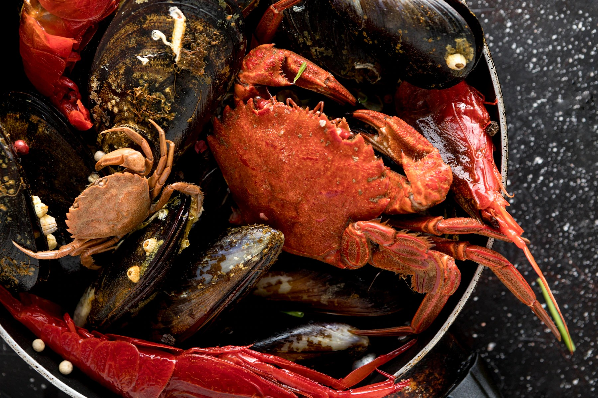
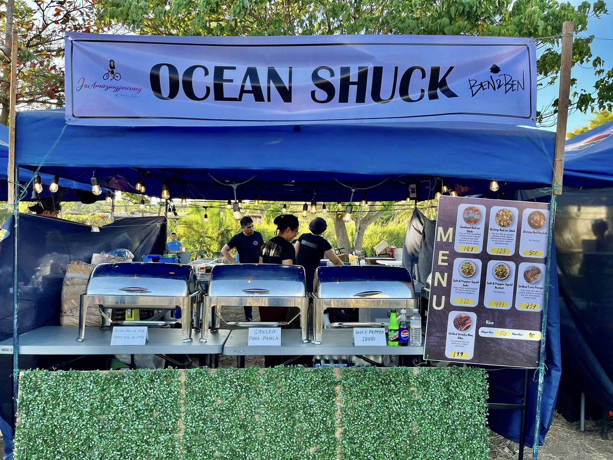

.jpg)
Welcome to Ocean Shuck: The Home of Seafood Boil in Bacolod!
At Ocean Shuck, we bring the ocean’s freshest flavors right to your table. Located in the heart of Bacolod, our seafood boil is famous for its mouthwatering combination of juicy shrimp, tender crabs, and flavorful mussels, all tossed in our signature blend of spices and sauces. Whether you're a seafood lover or just looking to enjoy a meal with friends and family, Ocean Shuck is the perfect place to dive into a delicious dining experience.
Explore our menu, discover daily specials, and get ready to savor the best seafood in town!
About Us
Ocean Shuck was born out of a love for fresh, flavorful seafood and a desire to bring a unique dining experience to Bacolod. We specialize in seafood boils, where we combine the freshest catch with our signature spices and sauces, creating a feast that’s perfect for sharing with friends and family.
Our goal is to provide a dining experience that not only celebrates the bounty of the ocean but also the joy of gathering around a table with loved ones.
At Ocean Shuck, every dish is made with care, using the best ingredients to ensure that each bite is packed with flavor. We are committed to delivering top-notch service and a memorable dining experience that keeps our customers coming back.
Mission
To bring the freshest and most flavorful seafood experience to Bacolod, while creating a warm and welcoming atmosphere where people can enjoy great food and make lasting memories with family and friends.
Vision
To be the leading seafood dining destination in Bacolod, known for our exceptional seafood boils, excellent customer service, and our commitment to sustainability and community.